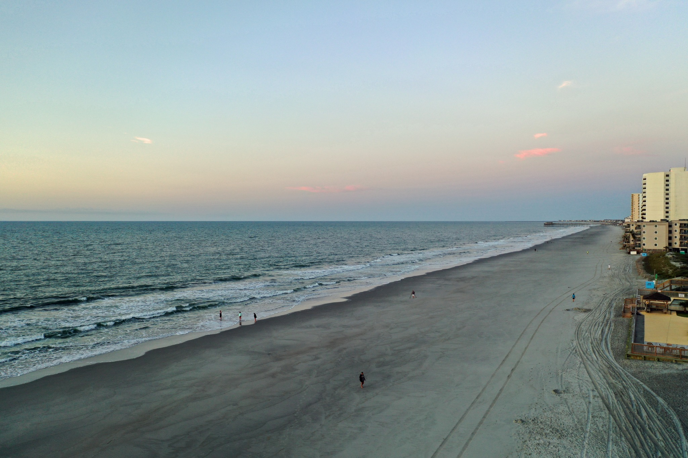
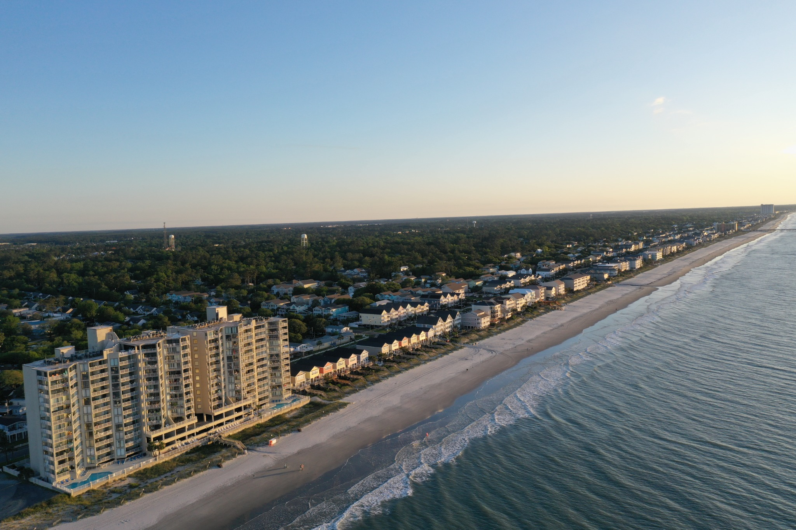
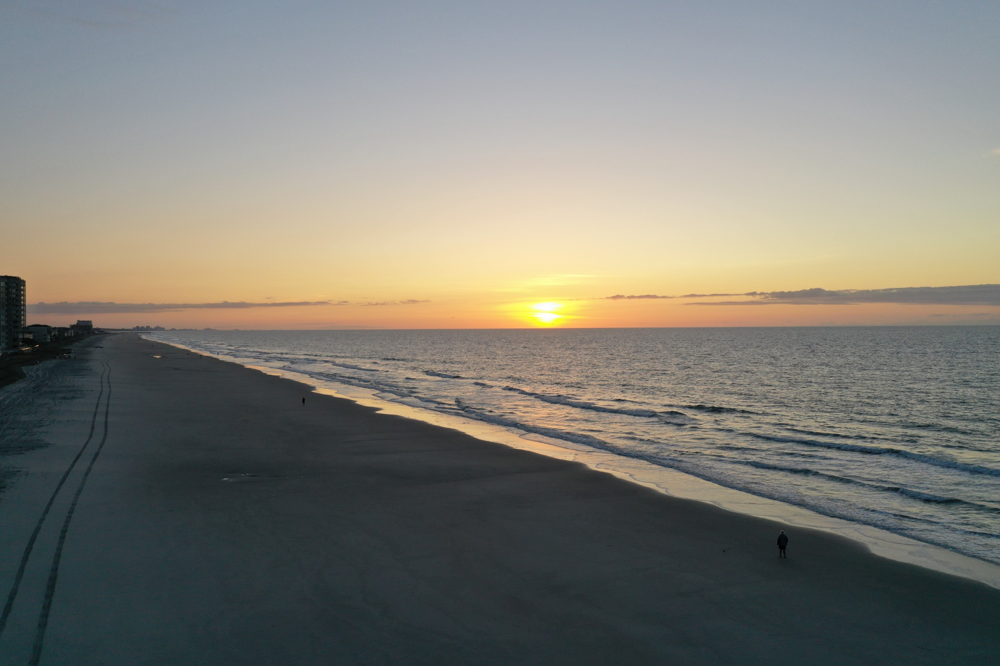
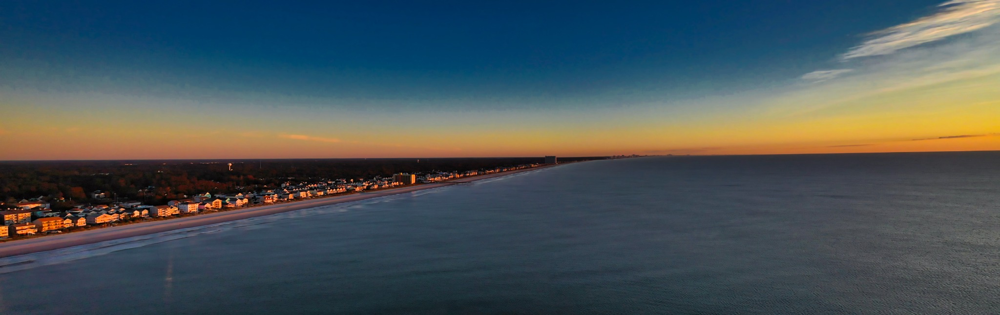
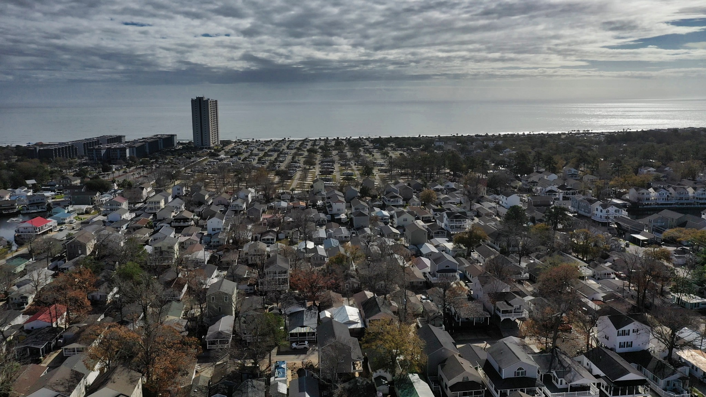

ORIGINAL DRONE PHOTOGRAPHY
Myrtle Beach From Above
Just for Fun — A collection of my favorite drone photographs from South Carolina's Grand Strand.
While this website is primarily about work-from-home opportunities, travel, technology and products I personally recommend, I also enjoy flying drones and capturing the beauty of the South Carolina coast. These are a few of my favorite aerial photographs. I hope you enjoy them as much as I enjoyed taking them.

Garden City at Dusk
The coastline settling into evening, seen from above.

Along the Grand Strand
A wide coastal view showing why this stretch of South Carolina is so special.

Sunrise Over the Coast
Early morning light spreading across the beach and Atlantic Ocean.

Grand Strand Sunset
A panoramic view as the sky changes color over the shoreline.

Surfside Beach From Above
A familiar neighborhood looks completely different from the air.
Have a favorite?
I plan to add more photographs over time, so check back as this just-for-fun gallery grows.
INTERESTED IN LIVEGOOD?